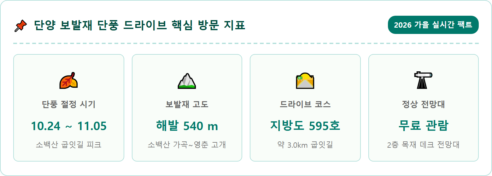
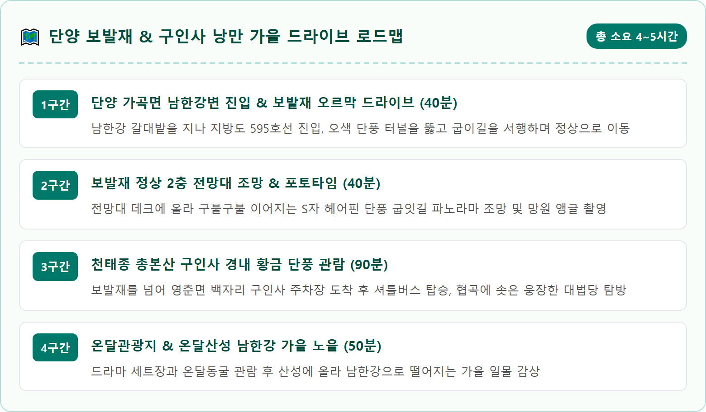
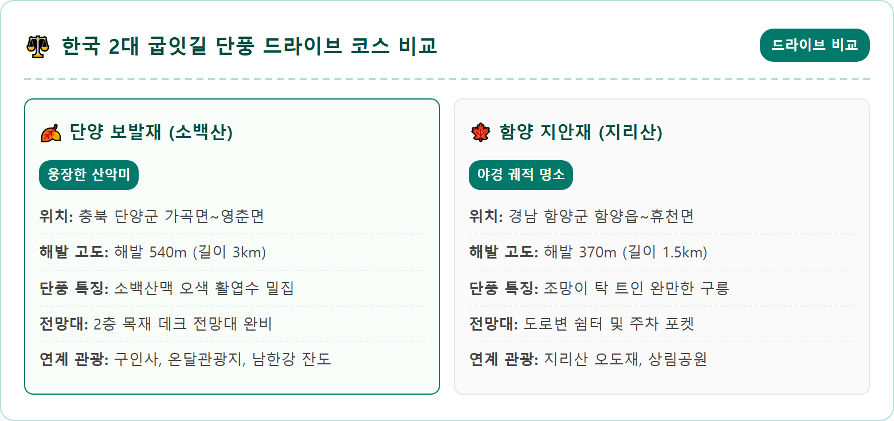
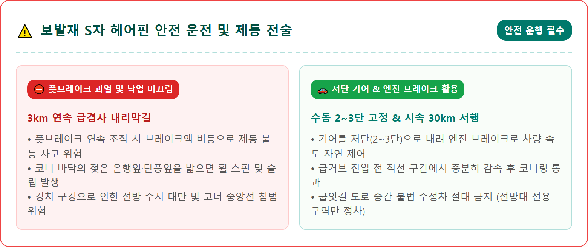
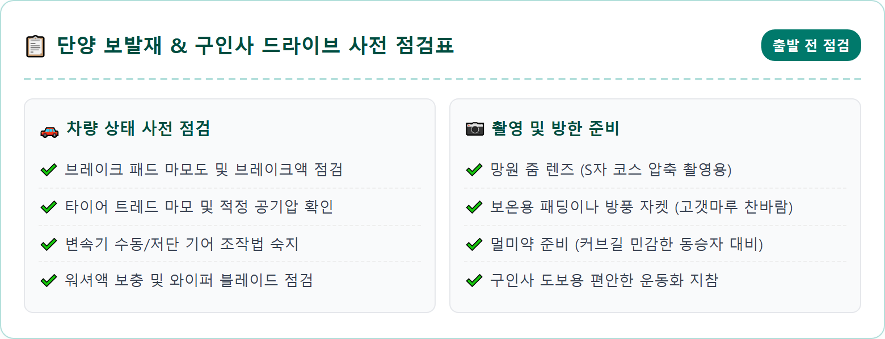
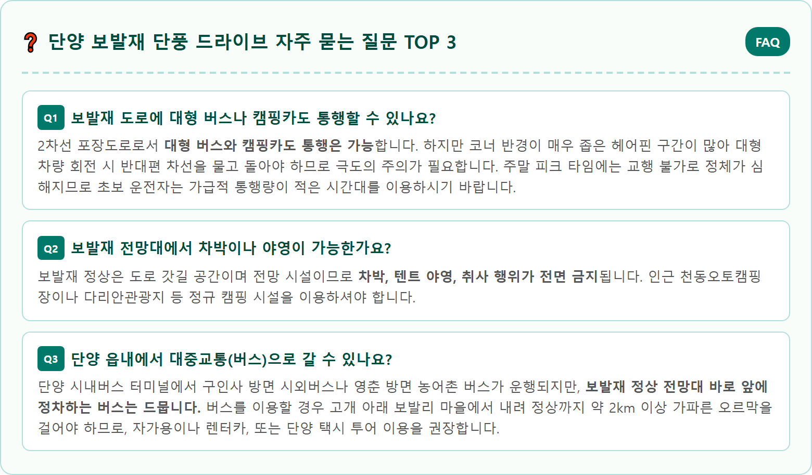

An awe-inspiring elevated aerial high-angle view overlooking the famous winding S-curve mountain road of Bobaljae pass in Danyang, South Korea, during autumn peak. Steep slopes of Sobaeksan mountain densely covered with explosive autumn foliage in fiery red, burnt orange, bright yellow, and evergreen pines. A serpentine two-lane asphalt mountain road winding gracefully down through the colorful autumn forest like a ribbon. Soft morning mist drifting along the deep mountain valley. Crisp golden sunlight highlighting the mountain ridges under a deep blue sky. Hyper-realistic, 8k resolution, national geographic style landscape photography, 1:1 aspect ratio.






| 구분 | 상세 정보 |
|---|---|
| 위치 | 충북 단양군 가곡면 보발리 ~ 영춘면 백자리 (지방도 595호선) |
| 고개 제원 | 해발 540m / 고갯길 연장 약 3.0km (S자 헤어핀 연속 구간) |
| 단풍 절정기 | 10월 24일경 ~ 11월 5일경 |
| 전망대 시설 | 보발재 정상 2층 목재 데크 전망대 (무료 상시 개방) |
| 주차 공간 | 전망대 앞 갓길 소형 주차 구역 (약 10~15대, 무료) |
| 연계 명소 | 대한불교 천태종 구인사 (차량 10분), 온달관광지 (차량 15분) |
| 운전 주의사항 | 연속 급경사 내리막 저단 기어(엔진 브레이크) 필수 사용, 서행 운전 |